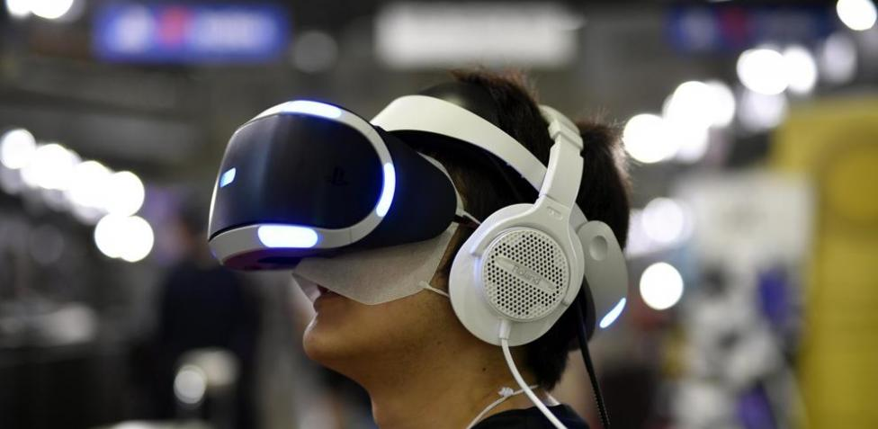
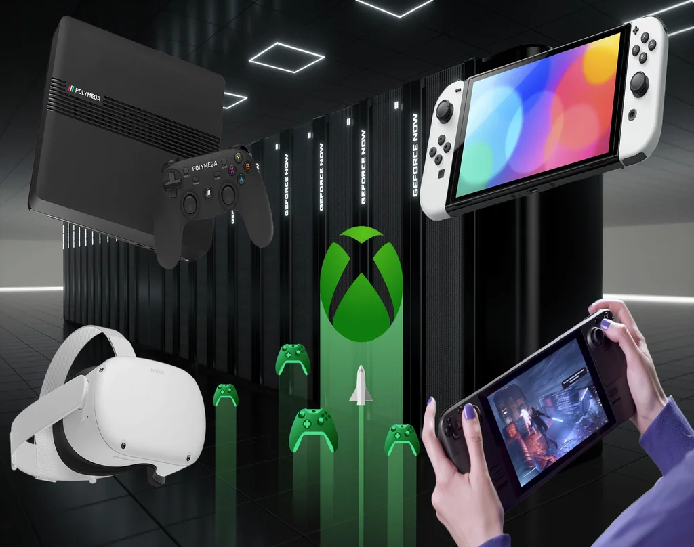
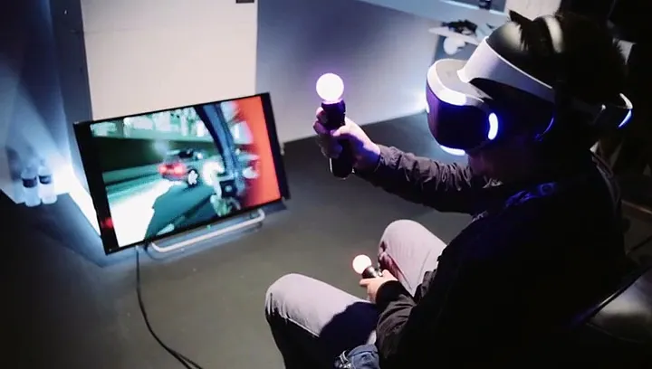
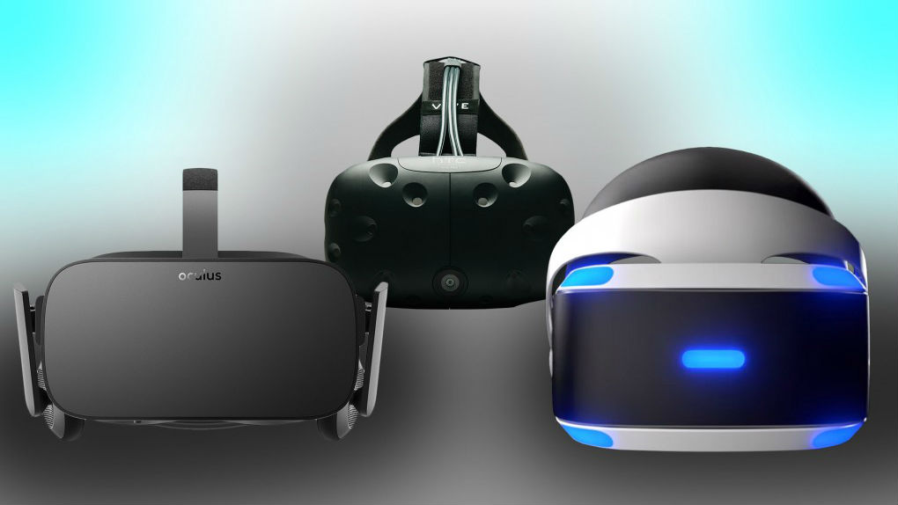
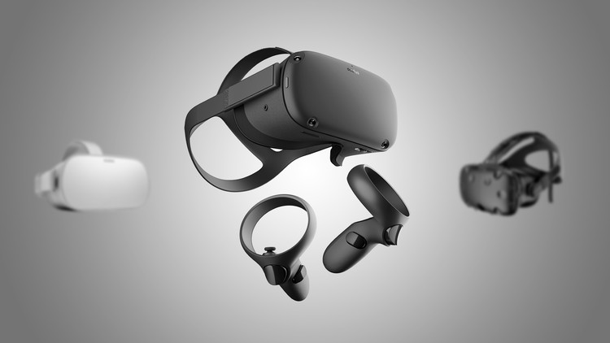

La Realidad Virtual (RV) ha dejado de ser un concepto futurista para convertirse en una tecnología transformadora
con aplicaciones en diversos campos, desde el entretenimiento hasta la medicina. Mediante la creación de
entornos simulados que pueden ser explorados e interactuados en tiempo real, la RV ofrece experiencias
inmersivas que desafían los límites entre lo físico y lo digital. Este ensayo examina los fundamentos
tecnológicos de la RV, sus aplicaciones actuales, los desafíos que enfrenta y su impacto en la sociedad.


• Videojuegos inmersivos (Half-Life: Alyx, Beat Saber).
• Cine interactivo (Experiencias VR como Henry de Oculus).
• Conciertos y eventos virtuales (Fortnite, Wave VR).

• Peso y comodidad de los cascos VR.
• "Motion sickness" (mareos por desfase visual-motor).
• Alto costo de equipos de gama alta.